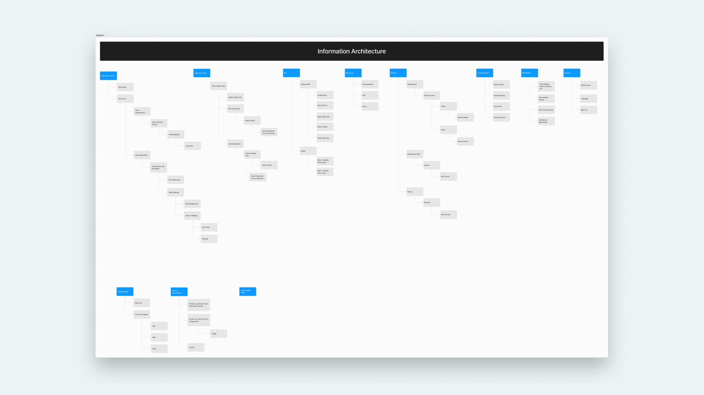

Map Management Portal
Service Center is Mapxus's self-service platform for venue owners, enabling them to manage digital map data, configure API settings, customise map styles, and access usage analytics. I joined at the earliest stage of the product, before any direction had been set, and led the research, product strategy, and development from the ground up.

Research

With no existing product to reference, I designed a multi-stakeholder research programme covering six distinct groups: venue owners, sales representatives, customer service staff, operations teams, C-suite, and developers. Each group had different priorities and pain points, and understanding where they conflicted was as important as understanding where they aligned.
Sales flagged the manual overhead of managing venue data on behalf of clients. Customer service identified the most common sources of enquiry and frustration. Operations highlighted the inefficiencies in data maintenance workflows. Venue owners wanted autonomy and transparency over their own map data. Developers provided the technical constraints that shaped what was architecturally feasible. C-suite set the strategic frame. The research produced a clear picture of a product that needed to serve all of these simultaneously, which meant modularisation was not a preference but a structural requirement.
Visualise business flow

I synthesised the findings into a visual business flow mapping the current state across all stakeholder groups, showing where breakdowns occurred, where processes duplicated effort, and where opportunities for the platform were clearest. This was presented to all parties to establish a shared understanding of the problem before any design work began.
Information architecture

From the business flow, I designed the information architecture: a modular framework organising the platform into discrete functional areas, each scoped to a specific user need. Key screens were designed early specifically to enable stakeholder feedback before committing to development, ensuring alignment across groups with competing priorities.

Modularised development
Service Center was built across 16 modules, each independently deployable. This structure allowed the team to prioritise and release in stages, reducing risk and enabling feedback loops throughout development rather than only at launch.

Launch
Service Center launched in December 2023 with 10 modules live, rolling out across Hong Kong, Singapore, Taiwan, and Japan. Development of the remaining modules continued post-launch.